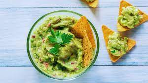

|
GUACAMOLE

- 1 abacate maduro
- 2 tomates
- 1 cebola
- 1/2 maço de coentro
- 1 limão espremido
- 1 colher de sopa de azeite
- sal a gosto
- Corte os tomates ao meios, retire a poupa e corte em cubinhos;
- Retire a casca da cebola e corte-a em cubinhos;
- Pique o coentro, bem picadinho;
- Corte o abacate ao meio, retire o caroço e retire a polpa;
- Corte a pimenta dedo de moça ao meio, retire as sementes e pique bem picadinha;
- Transfira para uma tigela e amasse o abacate, mas não muito;
- não deixe o abacate muito amaçado, é importante que ele fique grosseiro e com pequenos pedaços.
- Nessa mesma tigela, adicione os tomates, a cebola, o coentro, a pimenta, o suco do limão, o azeite e o sal a gosto;
- Misture bem, mas sem amassar;
- Em seguida sirva o guacamole com tortilhas, com torradinhas, com pão ou sirva como salada.
|